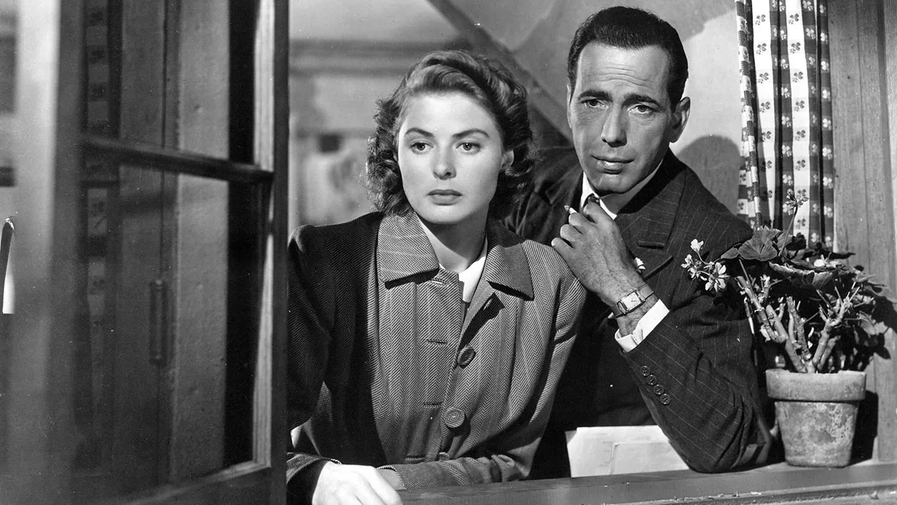

Lawrence of Arabia (1962)
Director: David Lean
Top-Billed Cast: Peter O’Toole, Omar Sharif, Alec Guinness
Popularity & Significance: When it was released, David Lean’s epic earned critical acclaim and multiple Academy Awards. It was praised for its sweeping cinematography, grand scale, and Peter O’Toole’s commanding performance. The desert landscapes and intricate storytelling set a new standard for cinematic epics and firmly cemented the film as a Hollywood milestone.
Why It’s No Longer Popular: At over three hours long and with a deliberate, slow pace, the film can feel intimidating to modern audiences used to fast-paced narratives. The epic style, revolutionary at the time, now contrasts sharply with contemporary storytelling, making casual viewing a challenge.
Singin’ in the Rain (1952)
Directors: Gene Kelly, Stanley Donen
Top-Billed Cast: Gene Kelly, Debbie Reynolds, Donald O’Connor
Popularity & Significance: This musical is often hailed as one of the greatest films in Hollywood history. Its playful choreography, iconic songs, and behind-the-scenes Hollywood storyline captured the magic of the Golden Age. It continues to influence musicals and has been a touchstone in cinema studies for decades.
Why It’s No Longer Popular: Despite its classic status, musicals have generally declined in mainstream appeal. The theatricality and sing-song style, while brilliant, feel distant to modern audiences accustomed to realistic narratives and faster editing.
Citizen Kane (1941)
Director: Orson Welles
Top-Billed Cast: Orson Welles, Joseph Cotten, Dorothy Comingore
Popularity & Significance: Orson Welles’ groundbreaking film is frequently cited as the greatest movie ever made. Its innovative use of deep focus, non-linear storytelling, and complex character study of Charles Foster Kane revolutionized filmmaking. Critics and film scholars continue to study it for its technical mastery and narrative ingenuity.
Why It’s No Longer Popular: While revered in film schools, Citizen Kane’s slow pacing, heavy dialogue, and historical context make it less accessible to casual viewers. Modern audiences often find its style distant and formal compared to contemporary cinematic language.
Casablanca (1942)
Director: Michael Curtiz
Top-Billed Cast: Humphrey Bogart, Ingrid Bergman, Paul Henreid
Popularity & Significance: A romantic drama that became an immediate cultural touchstone, Casablanca was celebrated for its timeless love story, memorable lines, and Humphrey Bogart and Ingrid Bergman’s performances. It became an enduring symbol of Hollywood’s Golden Age.
Why It’s No Longer Popular: While still quoted in pop culture, the heavy reliance on dialogue, slower pacing, and period-specific references make it less compelling for audiences today, especially those accustomed to action-driven or fast-moving narratives.
2001: A Space Odyssey (1968)
Director: Stanley Kubrick
Top-Billed Cast: Keir Dullea, Gary Lockwood, William Sylvester
Popularity & Significance: Stanley Kubrick’s visionary sci-fi epic challenged audiences with its visual storytelling, minimal dialogue, and philosophical themes. Its influence on filmmaking and science fiction is immeasurable, inspiring countless directors and visual artists.
Why It’s No Longer Popular: The film’s abstract narrative, long sequences without dialogue, and deliberate pacing can feel inaccessible or “boring” to viewers expecting conventional plots and continuous action, making it more of a cinematic study than casual entertainment.
Some Like It Hot (1959)
Director: Billy Wilder
Top-Billed Cast: Marilyn Monroe, Tony Curtis, Jack Lemmon
Popularity & Significance: Billy Wilder’s comedy was a huge hit for its witty humor, clever plot, and bold subject matter. It remains a classic example of screwball comedy and gender-bending humor in Hollywood.
Why It’s No Longer Popular: While still celebrated, modern audiences may find the humor dated or less relatable. Cultural and societal changes mean some jokes or situations no longer resonate in the same way.
These films are landmarks of Hollywood history, but they illustrate how audience tastes evolve. Classic status doesn’t always guarantee continued popularity in day-to-day viewing, yet their influence can still be seen in the films we love today. Rediscovering them can feel like opening a window into a different era of cinema — a glimpse of the magic that shaped modern storytelling.